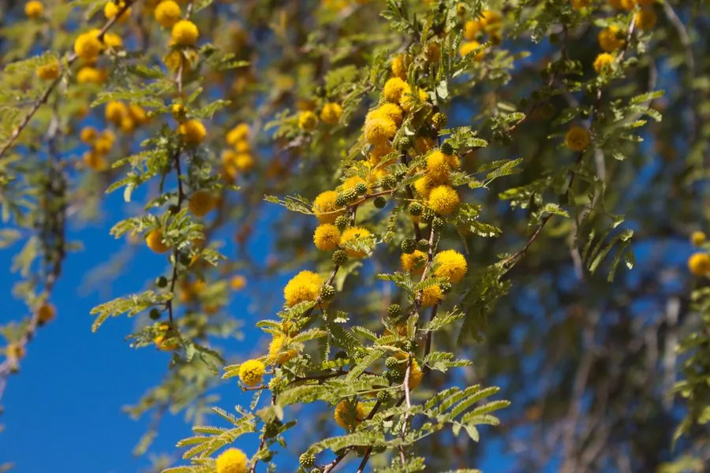

灌木与花木 · 植物界
金合欢 Acacia farnesiana

原产热带美洲的落叶灌木或小乔木，花金黄色、香气浓郁，可提取金合欢香精，枝条有刺，是南方干旱地区常见树种。
- 分类
- 门被子植物门纲木兰纲目豆目科豆科属金合欢属
- 栖息环境
- 海拔 800 米以下的热带亚热带干旱地区，喜光耐旱耐瘠薄
- 地理分布
- 原产热带美洲，中国广东、广西、福建、云南、海南等地栽培或逸生
- 保护级别
- 暂无评估；中国未列入国家重点保护野生植物名录
物种志
金合欢为落叶灌木或小乔木，高可达 8 m，枝条具托叶刺；叶片为二回羽状复叶，小叶细小而多，羽片 4–8 对。花期 3–5 月，头状花序球形、金黄色，由多数小花组成，香气浓郁；荚果圆柱形、肿胀，成熟时黑褐色，内含多数种子。
金合欢原产热带美洲，中国广东、广西、福建、云南、海南、台湾等地栽培或逸生，喜高温、光照充足，耐旱、耐瘠薄，适宜疏松肥沃、排水良好的土壤。花含芳香油，是提取金合欢香精的重要原料，用于高级香水与化妆品；果荚与树皮可提取栲胶，木材可制器具。金合欢根系发达，可作为干旱地区的绿肥、饲料与水土保持树种，在部分地区已成为归化植物。
形态与习性
- 株高可达 8 m，枝条具托叶刺
- 花期3–5 月，花金黄色球形、芳香
- 果期6–8 月，荚果圆柱形
- 光照喜光，不耐长期荫蔽
- 水分耐旱，怕积水
- 土壤疏松肥沃、排水良好的壤土
- 主要用途花提取金合欢香精、栲胶与木材、水土保持与饲料
趣味知识
- 金合欢的花金黄色、香气浓郁，是提取金合欢香精的重要原料。
- 金合欢的荚果圆柱形、肿胀，成熟后变为黑褐色，内含多数种子。
- 金合欢枝条上有托叶刺，在干旱地区可防止动物啃食。
- 金合欢根系发达，常用于干旱地区的绿肥与水土保持。
生态关系
- 捕食 ← 长颈鹿 长颈鹿取食金合欢枝叶